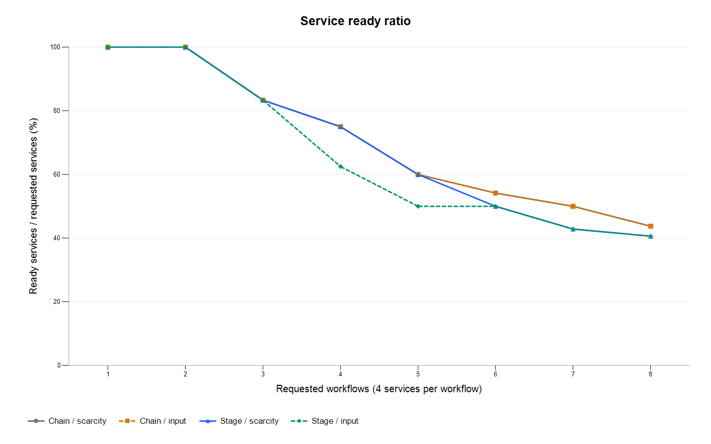
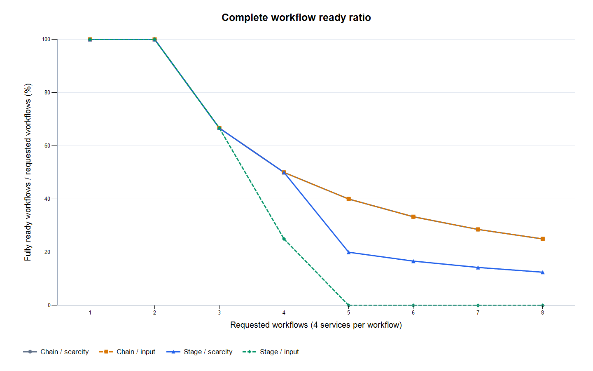
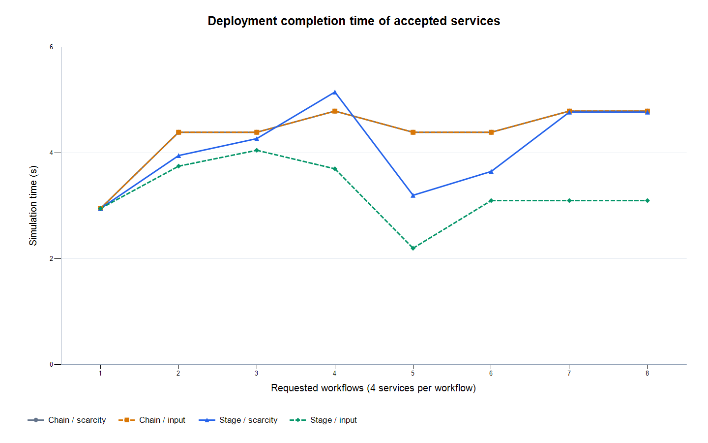
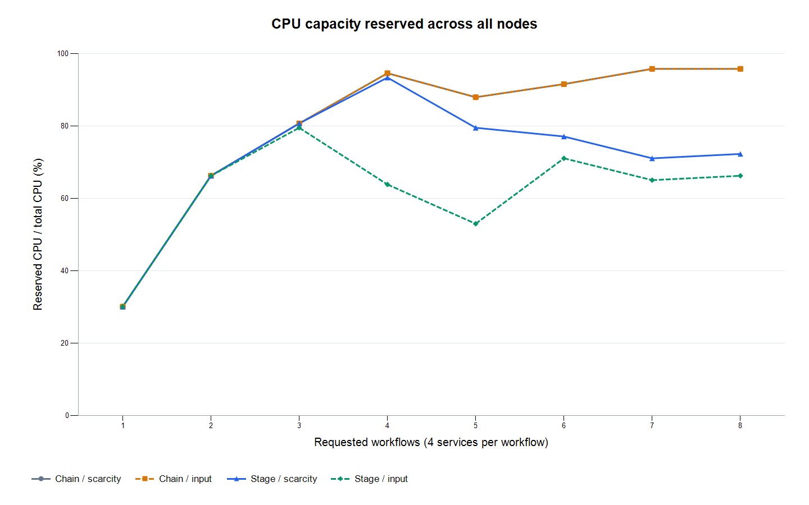
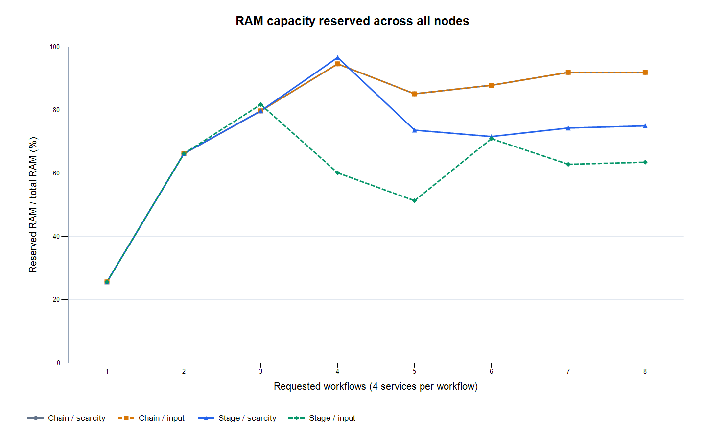
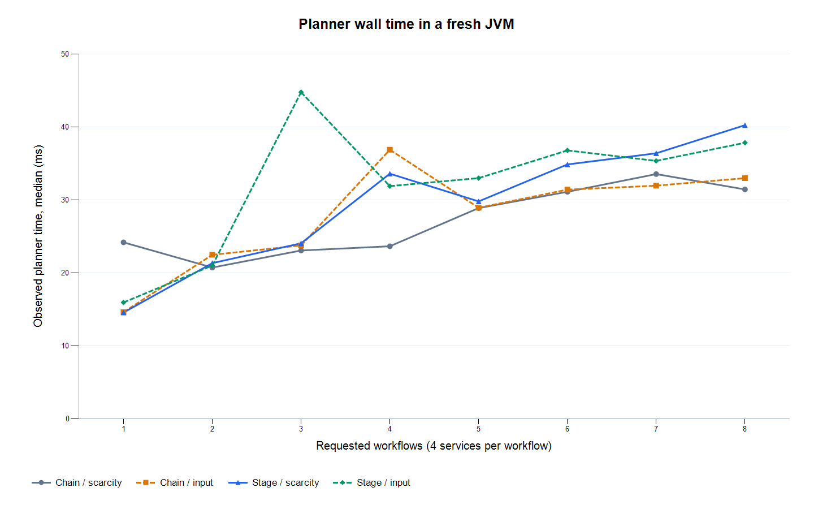

排序消融与输入顺序实验
本轮固定pressure节点、服务版本、束宽64和状态评分，仅比较输入布局及是否在规划器内使用稀缺度排序。chain按完整业务链输入；stage按依赖层级稳定分组。两种布局具有完全相同的服务、依赖及资源需求。每个布局内配对比较scarcity与input，日志及runs.csv记录实际输入和规划序列。普通指标按重复均值，规划耗时图取中位数。资源预留不等于实测利用率。
排序开关的总体观察
chain布局中，8/8个负载点的规划序列完全相同。stage布局中，7/8个点的规划序列改变；完整链数量增加的点有、减少的点有；在就绪服务及完整链数量相同的点中，排序后部署时间更长的点有。零效应和负效应均保留，这些结果只描述本轮布局和负载。
最大负载下的结果：8 条业务链
- chain_scarcity：服务 14/32，完整链 2/8，部署 4.790 s
- chain_input：服务 14/32，完整链 2/8，部署 4.790 s
- stage_scarcity：服务 13/32，完整链 1/8，部署 4.770 s
- stage_input：服务 13/32，完整链 0/8，部署 3.100 s
每个组合仅运行一次，尚未检验重复运行的一致性。
完整结果表
| 链数 | 设置 | 就绪服务 | 完整链 | 服务就绪率 | 完整链就绪率 | 部署时间/s | CPU预留 | RAM预留 | 规划耗时中位数/ms |
|---|---|---|---|---|---|---|---|---|---|
| 1 | chain_scarcity | 4/4 | 1/1 | 100.00% | 100.00% | 2.950 | 30.12% | 25.68% | 24.205 |
| 1 | chain_input | 4/4 | 1/1 | 100.00% | 100.00% | 2.950 | 30.12% | 25.68% | 14.648 |
| 1 | stage_scarcity | 4/4 | 1/1 | 100.00% | 100.00% | 2.950 | 30.12% | 25.68% | 14.591 |
| 1 | stage_input | 4/4 | 1/1 | 100.00% | 100.00% | 2.950 | 30.12% | 25.68% | 15.972 |
| 2 | chain_scarcity | 8/8 | 2/2 | 100.00% | 100.00% | 4.390 | 66.27% | 66.22% | 20.754 |
| 2 | chain_input | 8/8 | 2/2 | 100.00% | 100.00% | 4.390 | 66.27% | 66.22% | 22.498 |
| 2 | stage_scarcity | 8/8 | 2/2 | 100.00% | 100.00% | 3.950 | 66.27% | 66.22% | 21.357 |
| 2 | stage_input | 8/8 | 2/2 | 100.00% | 100.00% | 3.750 | 66.27% | 66.22% | 21.031 |
| 3 | chain_scarcity | 10/12 | 2/3 | 83.33% | 66.67% | 4.390 | 80.72% | 79.73% | 23.089 |
| 3 | chain_input | 10/12 | 2/3 | 83.33% | 66.67% | 4.390 | 80.72% | 79.73% | 23.781 |
| 3 | stage_scarcity | 10/12 | 2/3 | 83.33% | 66.67% | 4.270 | 80.72% | 79.73% | 24.078 |
| 3 | stage_input | 10/12 | 2/3 | 83.33% | 66.67% | 4.050 | 79.52% | 81.76% | 44.770 |
| 4 | chain_scarcity | 12/16 | 2/4 | 75.00% | 50.00% | 4.790 | 94.58% | 94.59% | 23.671 |
| 4 | chain_input | 12/16 | 2/4 | 75.00% | 50.00% | 4.790 | 94.58% | 94.59% | 36.893 |
| 4 | stage_scarcity | 12/16 | 2/4 | 75.00% | 50.00% | 5.150 | 93.37% | 96.62% | 33.608 |
| 4 | stage_input | 10/16 | 1/4 | 62.50% | 25.00% | 3.700 | 63.86% | 60.14% | 31.906 |
| 5 | chain_scarcity | 12/20 | 2/5 | 60.00% | 40.00% | 4.390 | 87.95% | 85.14% | 28.897 |
| 5 | chain_input | 12/20 | 2/5 | 60.00% | 40.00% | 4.390 | 87.95% | 85.14% | 28.946 |
| 5 | stage_scarcity | 12/20 | 1/5 | 60.00% | 20.00% | 3.200 | 79.52% | 73.65% | 29.815 |
| 5 | stage_input | 10/20 | 0/5 | 50.00% | 0.00% | 2.200 | 53.01% | 51.35% | 33.004 |
| 6 | chain_scarcity | 13/24 | 2/6 | 54.17% | 33.33% | 4.390 | 91.57% | 87.84% | 31.126 |
| 6 | chain_input | 13/24 | 2/6 | 54.17% | 33.33% | 4.390 | 91.57% | 87.84% | 31.428 |
| 6 | stage_scarcity | 12/24 | 1/6 | 50.00% | 16.67% | 3.650 | 77.11% | 71.62% | 34.878 |
| 6 | stage_input | 12/24 | 0/6 | 50.00% | 0.00% | 3.100 | 71.08% | 70.95% | 36.796 |
| 7 | chain_scarcity | 14/28 | 2/7 | 50.00% | 28.57% | 4.790 | 95.78% | 91.89% | 33.555 |
| 7 | chain_input | 14/28 | 2/7 | 50.00% | 28.57% | 4.790 | 95.78% | 91.89% | 31.966 |
| 7 | stage_scarcity | 12/28 | 1/7 | 42.86% | 14.29% | 4.770 | 71.08% | 74.32% | 36.403 |
| 7 | stage_input | 12/28 | 0/7 | 42.86% | 0.00% | 3.100 | 65.06% | 62.84% | 35.361 |
| 8 | chain_scarcity | 14/32 | 2/8 | 43.75% | 25.00% | 4.790 | 95.78% | 91.89% | 31.457 |
| 8 | chain_input | 14/32 | 2/8 | 43.75% | 25.00% | 4.790 | 95.78% | 91.89% | 32.997 |
| 8 | stage_scarcity | 13/32 | 1/8 | 40.63% | 12.50% | 4.770 | 72.29% | 75.00% | 40.253 |
| 8 | stage_input | 13/32 | 0/8 | 40.63% | 0.00% | 3.100 | 66.27% | 63.51% | 37.847 |
负载变化曲线






排序开关的配对差异
服务差值和完整链差值为scarcity减input；时间缩短正值表示scarcity更快，仅在就绪服务数及完整链数相同时计算。chain输入通常已与稀缺度顺序相同，作为阴性对照；顺序改变不代表结果一定改善。
| 链数 | 输入布局 | 排序改变位置数 | 就绪服务差值 | 完整链差值 | 部署时间缩短 |
|---|---|---|---|---|---|
| 1 | chain | 0 | 0 | 0 | 0.00% |
| 1 | stage | 0 | 0 | 0 | 0.00% |
| 2 | chain | 0 | 0 | 0 | 0.00% |
| 2 | stage | 2 | 0 | 0 | -5.33% |
| 3 | chain | 0 | 0 | 0 | 0.00% |
| 3 | stage | 4 | 0 | 0 | -5.43% |
| 4 | chain | 0 | 0 | 0 | 0.00% |
| 4 | stage | 6 | 2 | 1 | 不直接比较 |
| 5 | chain | 0 | 0 | 0 | 0.00% |
| 5 | stage | 8 | 2 | 1 | 不直接比较 |
| 6 | chain | 0 | 0 | 0 | 0.00% |
| 6 | stage | 10 | 0 | 1 | 不直接比较 |
| 7 | chain | 0 | 0 | 0 | 0.00% |
| 7 | stage | 12 | 0 | 1 | 不直接比较 |
| 8 | chain | 0 | 0 | 0 | 0.00% |
| 8 | stage | 14 | 0 | 1 | 不直接比较 |
指标解释和适用范围
这些结果描述固定合成场景下的离散事件部署仿真。当前只检查操作系统与 CPU/RAM 容量约束，未验证真实容器、RTP、驱动/API 或安全策略兼容性。部署时间只覆盖被接纳的服务，应结合服务和完整业务链就绪数量解释；完整链数量相同也不代表链的身份相同。各组合启动独立 JVM，没有排除 JIT/预热影响，规划耗时仅作描述；重复同一确定性输入不能代替随机场景或独立样本，报告不作显著性或普遍最优结论。相同规划顺序或相同结果属于应保留的消融证据，不能声称稀缺度排序在原chain布局已被证明有效。规划计时还包含排序和各自输入校验开销，单次耗时差不作为稳态排序代价的证明。
数据与复现
逐次汇总 · 分组汇总 · 排序开关配对差异 · 配置与环境 · 源码哈希 · Markdown报告
原始 CSV 位于 raw/，完整日志位于 logs/，源码和脚本快照位于 snapshot/。